The Imperial Cutter is a large ship manufactured by Gutamaya. It is considered the pride of their shipyard and recognized everywhere for its sleet lines and sophisticated profile. It is the most expensive ship on the market at times of writing and considered a very formidable ship in terms of weapon loadout capability and an excellent defensive trader. The following reference quantities were used when performing the analysis for the Imperial Cutter. Additionally, diagrams of the Imperial Cutter’s geometry and CG used in the analysis are provided.
| S_ref (Reference Area) | 2110.3500 m^2 |
| b_ref (Reference Span) | 111.1189 m |
| c_ref (Reference Chord) | 192.5583 m |
| CG_x | 79.4530 m from leading edge |
| CG_y | Ship centerline |
| CG_z | 12.1836 m from bottom-most surface |
The Imperial Cutter boasts a rather unique profile that even hints at strong aerodynamic performance. While the sleek nature of the Imperial Cutter, a trait shared by all Gutamaya ships, leads to great drag performance, especially at high speeds, the ship does suffer in lift generation. While the underside is basically flat which lead to other ships being high lift performers, the difference is the ratio of frontal area to underside area. While other ships might boast a sleek front view and a large flat bottom view, the Imperial Cutter has a fatter front profile and a smaller bottom profile. Since frontal area is the parameter of choice for a reduction parameter, this is what causes it to fall flat on calculated lift performance. Due to its slightly angled back, the drag bucket occurs as a positive angle of attack as well as the zero lift angle of attack (~2°).
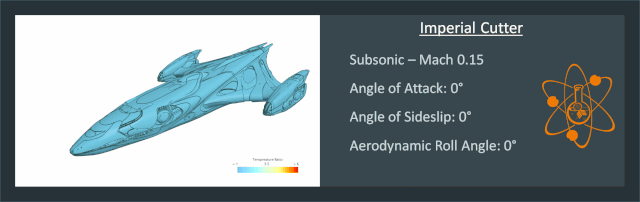
Since the Imperial Cutter has significantly more area on the aft end of the vehicle, and what could be considered wings, the ship is very pitch stable. This could allow the CG to travel ~15% the length of the ship further forward and the vehicle would still be stable, an excellent margin for a cargo ship. Not knowing for certain where the interior cargo bay is on the Imperial Cutter, but knowing it can carry more goods than almost any other ship at time of writing, led to some initial concern over the pitch stability. These results show that even if a good chunk of cargo is stored forward of the approximate CG, between the thrusters, the ship would remain stable in an atmosphere without any advanced controls needed. The Imperial Cutter can also trim aerodynamically at around 3°-5° angle of attack which hasn’t been common in analysis to-date. This even almost lines up with the drag bucket meaning the Imperial Cutter could travel at its trim point at almost minimum drag. This doesn’t lie at its peak lift-to-drag ratio though so it would depend on if the pilot was aiming for minimum speed loss or furthest range, a trade for sure.
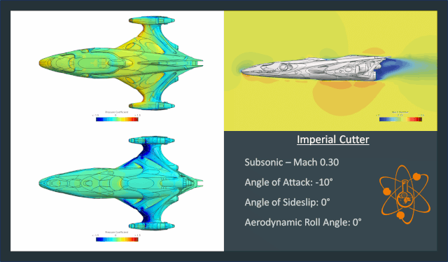
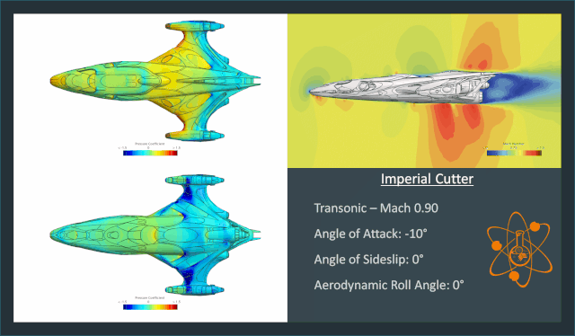
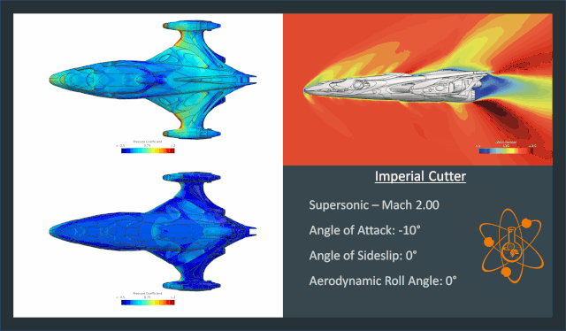
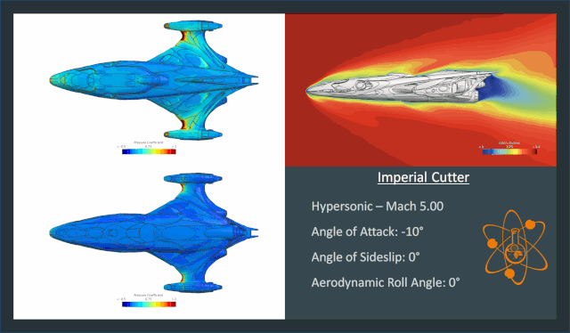
Despite being relatively flat without any vertical control surfaces, the Imperial Cutter manages to be neutrally stable to stable in yaw. This is due to the engine nacelles but also how the wings flare out aft of the CG, becoming pressurized at sideslip angles and pushing the ship back towards zero sideslip. There is some odd transonic behavior as the shocks build up around these wings but nothing a decent flight control system couldn’t handle. As expected, the yawing moment coefficient is almost an order of magnitude smaller than the pitching moment, leading the Imperial Cutter to be a bank-to-turn airframe.
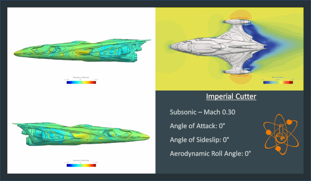
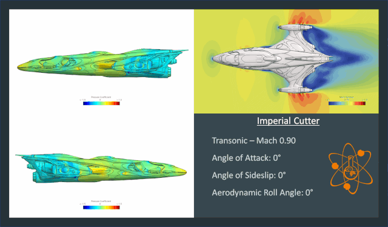
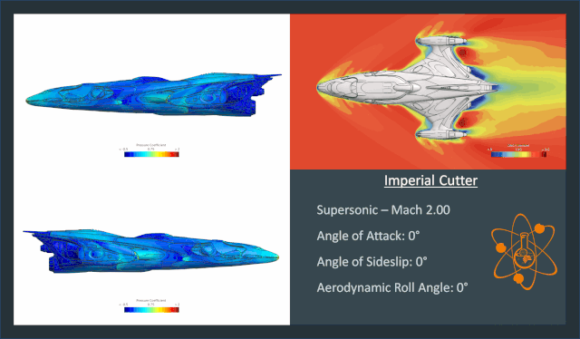
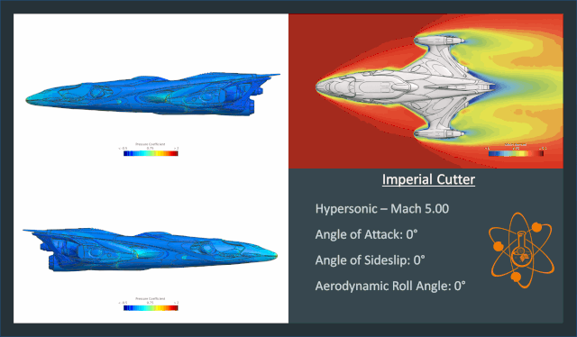
The Imperial Cutter remains true to form as it remains stable in pitch, yaw, and now roll. It’s a small moment, even an order of magnitude smaller than its yawing moment, but it is stable. Unfortunately, the front view reveals a potentially deadly issue, to be discussed in the conclusions.
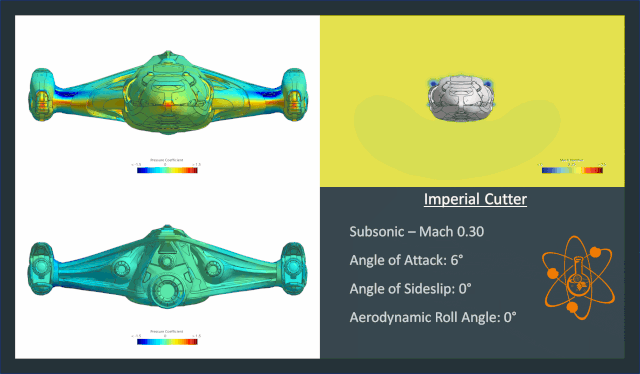
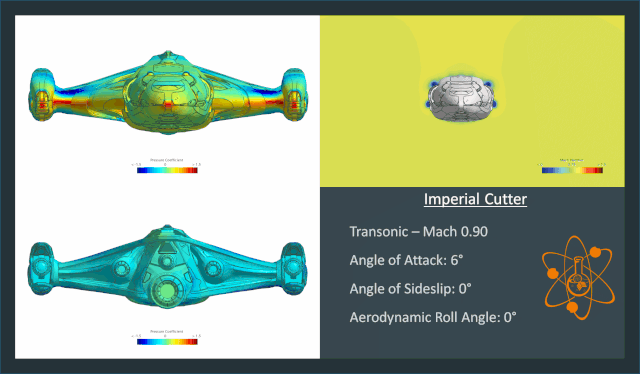
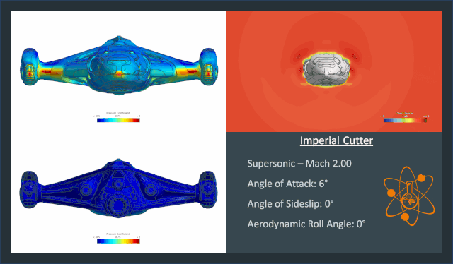
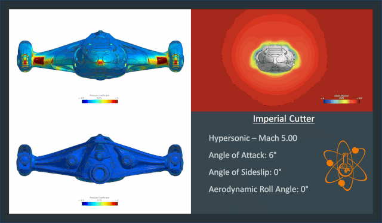
As one might have expected from the Imperial Cutter, with great price comes great luxury. Being stable in all three axis would make for a very easy flight for any pilot, allowing them to sit back with a cigar and brandy as the vehicle almost effortlessly flew itself through the air. It’s a shame this stable ship is the most expensive of all, meaning inexperienced pilots who could benefit from increased stability have to fly ships without it at risk before being able to afford such a vehicle. Unfortunately, the Imperial Cutter also shows a problem seen on other ships and what this author considers will be characteristics on all Gutamaya ships. Gutamaya has a signature style with their ships that are flyable by members of the Pilots Federation, they all have wing pylons. As seen in the front view during hypersonic flight, there are hot spots on the wings. Looking at the top view at the same flight conditions, the reason is exposed, shock-on-shock interaction. The blunt wings generate a bow shock in front of them and the outboard pylons do as well. The bow shocks from the pilots impinge on the wing’s bow shock. Depending on how this interaction occurs, it could be devastating as detailed in the Alliance Chieftain analysis. Given that this type of shock-on-shock interaction requires very detailed analysis to sort out which type it is (Type IV not occurring except in unsteady analysis), it is recommended that the Pilots Federation hold Gutamaya’s feet to the fire and extensively analyze their ships with advanced CFD and/or wind tunnel testing. If pilots are paying for such luxury, they should feel safe while flying.
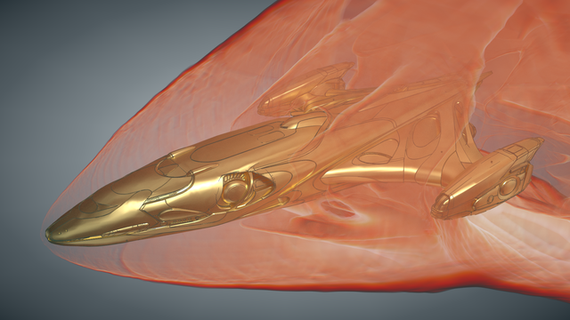